PicoGo Hardware¶
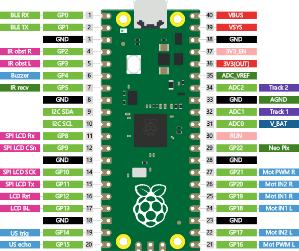function |
pin name |
pin |
pin |
pin name |
function |
|---|---|---|---|---|---|
Bluetooth RX |
GPIO0 |
1 |
40 |
VBUS |
|
Bluetooth TX |
GPIO1 |
2 |
39 |
VSYS |
|
GND |
3 |
38 |
GND |
||
IR obstacle right |
GPIO2 |
4 |
37 |
3V3_EN |
|
IR obstacle left |
GPIO3 |
5 |
36 |
3V3(OUT) |
|
Buzzer |
GPIO4 |
6 |
35 |
ADC_VREF |
|
IR receiver |
GPIO5 |
7 |
34 |
ADC2 |
Tracking sensor |
GND |
8 |
33 |
GND |
||
I2C SDA |
GPIO6 |
9 |
32 |
ADC1 |
Tracking sensor |
I2C SCL |
GPIO7 |
10 |
31 |
ADC0 |
Battery voltage |
LCD SPI RX |
GPIO8 |
11 |
30 |
RUN |
|
LCD SPI CS |
GPIO9 |
12 |
29 |
GPIO22 |
Neopixel |
GND |
13 |
28 |
GND |
||
LCD SPI SCK |
GPIO10 |
14 |
27 |
GPIO21 |
Motor PWM right |
LCD SPI TX |
GPIO11 |
15 |
26 |
GPIO20 |
Motor IN2 right |
LCD Reset |
GPIO12 |
16 |
25 |
GPIO19 |
Motor IN1 right |
LCD Backlight |
GPIO13 |
17 |
24 |
GPIO18 |
Motor IN1 left |
GND |
18 |
23 |
GND |
||
Ultrasonic distance trigger |
GPIO14 |
19 |
22 |
GPIO17 |
Motor IN2 left |
Ultrasonic distance echo |
GPIO15 |
20 |
21 |
GPIO16 |
Motor PWM left |
Infrared receiver¶
The PicoGo robot features an IR receiver for remote controlling your robot.
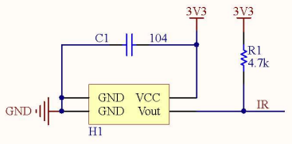 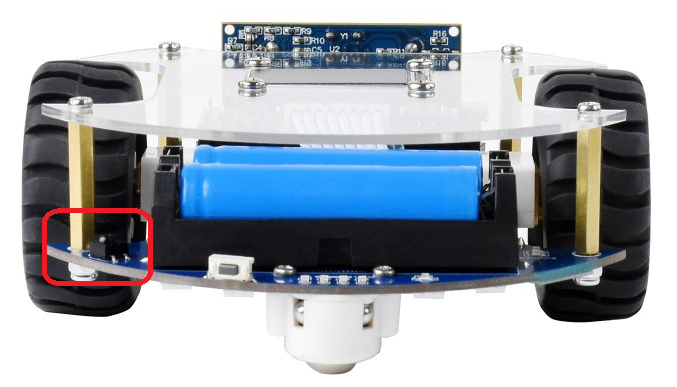{kind=link}
{kind=link}
From the schema and the actual hardware it is unclear what kind of component it is. Based on search results, it could however be something like an Everlight IRM-H6XXT or an Everlight EAIRMIA1. The top shows an engraving showing “AX14”.
Infrared obstacle avoidance¶
The PicoGo robot reatures two reflective photointerrupters for detecting obstacles in front of the robot.
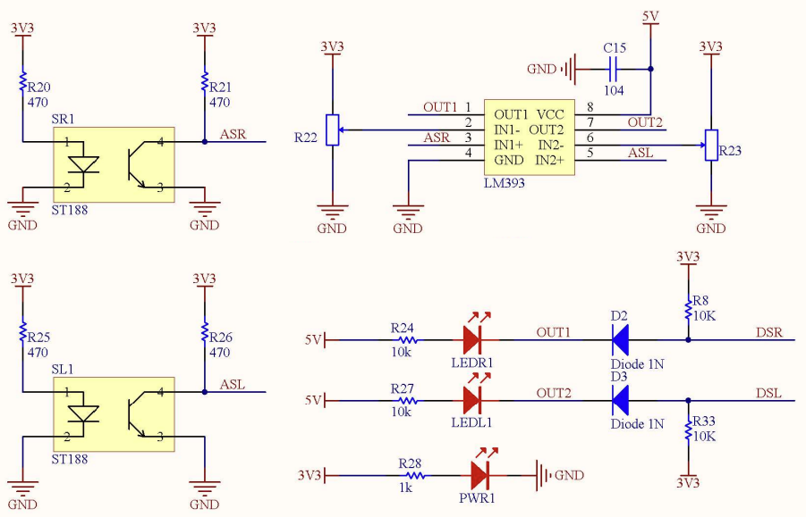 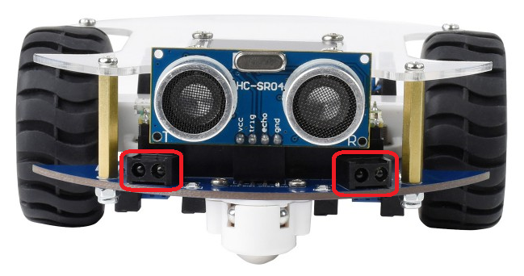{kind=link}
{kind=link}
Obstacles are detected using two Sunlight ST188 reflective photointerrupters. These
devices deliver a current that changes based on the distance to an obstacle. Using
a Texas Instruments LM393 differential comparator, this signal is converted into a
digital signal. This signal indicates whether an object was detected within a certain
threshold. Once the distance falls below this threshold, the value at the GPIOs 2
and 3, will change from 1 to 0. The threshold for this switch can be tuned using
the two potentiometers at the bottom of the robot. No software is needed for the
tuning process, as the robot also features two LEDs (marked LEDL and LEDR) that will
turn on as soon as the distance falls below the threshold.
{kind=link}
{kind=link}
Ultrasonic ranging¶
The PicoGo robot features an ultrasonic ranging module.
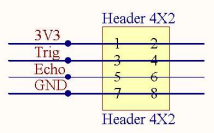 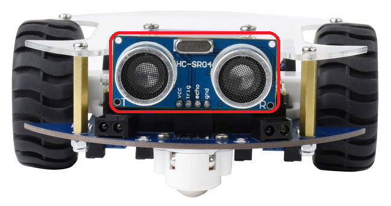{kind=link}
{kind=link}
Ultrasonic ranging is done using an HC-SR04 module. This module has two interface
pins. The trigger pin - called Trig in the schema - can be set to 1 in order
to generate an ultrasonic pulse. According to the
Datasheet from Sparkfun
it is recommended to generate a trigger pulse of at least 10 μs. An ultrasonic
pulse is generated and reflected off of any obstacles. When there is an echo, the
Echo pin will provide a 0-1-0-pulse whose duration is proportional
to the distance to the obstacle.
Detailed theory and tutorials for the HC-SR04 can be found on Adafruit and HowMechatronics.
IR line tracking¶
The PicoGo robot features 5 infrared line following sensors.
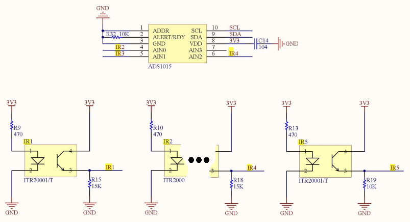 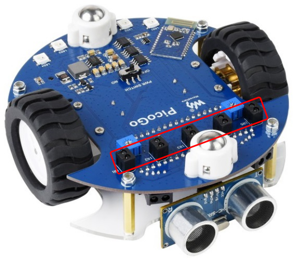{kind=link}
To detect the brightness of the surface beneath the robot, 5 Everlight ITR20001/T opto interruptors are used. These are connected to 2 different AD-converters.
The sensors on the far left and far right of the robot are directly connected to an ADC input of the RP2040. ADC1 (Pin32) and ADC2 (Pin34) are used for this purpose. The 3 sensors in the middle are connected to the ADS1015 external AD-converter that is then connected to the RP2040 over I2C.
When reading the ADC-values from the corresponding converters, be aware of the different value ranges. Both AD-converters have a resolution of 12-bit. However due to different interfaces and software libraries, the read values have a different range. The below tables show the ranges for an ADS1015 configuration with a “programmable gain amplifier (PGA)” setting of +/-4.096V and the ADC MicroPython module.
For values from the ADS1015, the following data is relevant:
Maximum possible input voltage [V] |
4.096 |
Digital input value for max voltage |
2048 |
Digital input value for 3.3V input |
1650 |
For values from the RP2040, the following data is relevant:
Maximum possible input voltage [V] |
3.3 |
Digital input value for max voltage |
4096 |
Value reported by MicroPython library for max voltage |
65536 |
As you can see, the MicroPython library provides a normalized 16-bit reading from the ADC, even though the RP2040 only has a 12-bit ADC. The provided value is scaled up for this purpose.
Display¶
The PicoGo robot features a 1.14’’ LCD for displaying status information or an entire user interface.
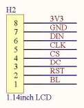 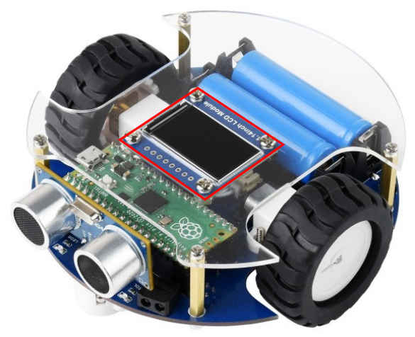{kind=link}
{kind=link}
The display is a WaveShare module with an LCD of a resolution of 240 x 135 pixel. It’s connected to the RP2040 via the SPI bus. The display controller itself is a Sitronix ST7789 TFT-LCD driver. Every pixel is represented by a 16-bit 5-6-5 RGB value.